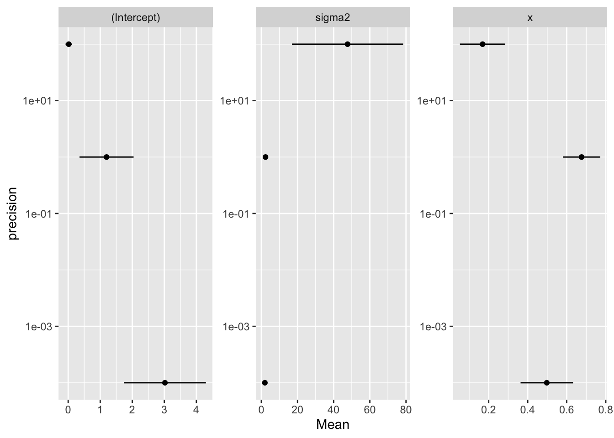

Chapter 10 Bayesian estimation and inference
Parameters
- Frequentist view: parameters are fixed
- Bayesian view: parameter are random
Posterior distribution: the probability distribution of the parameter(s) being estimated, given the data observed
Prior distribution: the probability distribution function used to ‘describe’ the parameter(s) before any data are observed
If we have a prior, we can calculate the posterior \(f(\theta | D = d)\) as follows:
\[ \begin{aligned} f(\theta | D = d) =& ~ \frac{f_D(d|\theta) ~ f_{\theta}(\theta)} {f_D(d)} \\ \end{aligned} \] where the likelihood \(f_D(d|\theta)\) is multiplied by the prior \(f_{\theta}(\theta)\) in the numerator, which is divided by the probability of the data \(f_D(d)\). The probability of the data is the probability of observing the data given the parameter, averaged across all parameter values weighted by the probability (or density) of each parameter value:
\[ \begin{aligned} f_D(d) =& ~ \int_{-\infty}^{\infty} f_D(d|\theta) f_{\theta}(\theta) d\theta\\ \end{aligned} \]
10.1 How to choose a prior distribution?
10.2 The unscaled posterior, conjugacy, and sampling from the posterior
10.2.1 Rejection sampling algorithm
Sample an observation \(\theta^*\) from the prior distribution.
Compute \(m\), the quotient of the unscaled posterior divided by the prior at \(\theta^*\):
\[ \begin{aligned} m =& ~ \frac{f_D(d|\theta^*) ~ f_{\theta}(\theta^*)} {f_{\theta}(\theta^*)} \\ =& ~ f_D(d|\theta^*) \\ =& ~ L(\theta^* | d) \end{aligned} \]
Independently, sample a random variable X from a continuous distribution.
If X m, then “accept” \(\theta^*\) as an observation from the posterior distribution and save its value. Otherwise “reject” \(\theta^*\) and discard it.
Repeat steps 1–4 until the desired number of simulated observations from the posterior distribution are gathered.
10.2.2 Exercise set 10-1
n <- 20
true.mean <- 2
known.sd <- 1
prior.mean <- 0
prior.sd <- 1
set.seed(8675309)
z <- rnorm(n,true.mean,known.sd)
mean(z)## [1] 2.149314
- Edge’s function uses equations 10.4 and 10.5 to calculate the mean and variance of the posterior distribution, which we know is normal due to conjugacy (Normal prior \(\times\) Normal likelihood = Normal posterior):
post.conj.norm.norm <- function(z, known.sd, prior.mean, prior.sd){
xbar <- mean(z)
post.expec <- (prior.mean / prior.sd^2 + xbar*length(z) /
known.sd^2)/(1 / prior.sd^2 + length(z) / known.sd^2)
post.var <- 1 / (1 / prior.sd^2 + length(z) / known.sd^2)
list("posterior.expectation" = post.expec,
"posterior.variance" = post.var)
}
post_conjugate <- post.conj.norm.norm(z, known.sd, prior.mean, prior.sd)- Using MCMC
library(MCMCpack)
mn.mod <- MCnormalnormal(z, sigma2 = 1, mu0 = prior.mean, tau20 = prior.sd^2, mc = 10000)
summary(mn.mod) ##
## Iterations = 1:10000
## Thinning interval = 1
## Number of chains = 1
## Sample size per chain = 10000
##
## 1. Empirical mean and standard deviation for each variable,
## plus standard error of the mean:
##
## Mean SD Naive SE Time-series SE
## 2.046645 0.219418 0.002194 0.002308
##
## 2. Quantiles for each variable:
##
## 2.5% 25% 50% 75% 97.5%
## 1.614 1.897 2.045 2.194 2.476Let’s plot the MCMC results in a histogram, and overlaid with a normal distribution from the conjugate expression.
hist(mn.mod, freq = FALSE, border = "white")
x <- seq(0, 4, length=100)
hx <- dnorm(x, mean = post_conjugate$posterior.expectation, sd = sqrt(post_conjugate$posterior.variance))
lines(x, hx, lwd = 2)
The ratio of the unscaled posterior to the prior is the likelihood.
See Edge.
We can adjust step 2 in the above algorithm by dividing the likelihood of \(\theta^*\) by the maximum likelihood:
- Compute \(m\), the quotient of the unscaled posterior divided by the prior at \(\theta^*\):
\[ \begin{aligned} m =& ~ \frac{L(\theta^* | d)} {\text{argmax} ~ L(\theta | d)} \\ \end{aligned} \] d. Edge’s R function for rejection sampling
#Get 1 sample under rejection sampling from normal with known sd.
#z is a vector of data.
get.1.samp.norm <- function(z, known.sd = 1, prior.mean = 0, prior.sd = 1){
accepted <- FALSE
max.like <- exp(sum(log(dnorm(z, mean = mean(z), sd = known.sd))))
while(accepted == FALSE){
cand <- rnorm(1, prior.mean, prior.sd)
like <- exp(sum(log(dnorm(z, mean = cand, sd = known.sd))))
crit <- like / max.like
xunif <- runif(1,0,1)
if(xunif <= crit){accepted <- TRUE}
}
cand
}
# Wrapper for get.1.samp.norm() that gets rejection sample from posterior of desired size.
reject.samp.norm <- function(z, known.sd = 1, prior.mean = 0, prior.sd = 1, nsamps = 10000){
samps <- numeric(nsamps)
for(i in seq_along(samps)){
samps[i] <- get.1.samp.norm(z, known.sd, prior.mean, prior.sd) }
samps }#Get 1 sample under rejection sampling from normal with known sd, using unscaled likelihood
#z is a vector of data.
get.1.samp.norm.unscaled <- function(z, known.sd = 1, prior.mean = 0, prior.sd = 1){
accepted <- FALSE
max.like <- exp(sum(log(dnorm(z, mean = mean(z), sd = known.sd))))
while(accepted == FALSE){
cand <- rnorm(1, prior.mean, prior.sd)
like <- exp(sum(log(dnorm(z, mean = cand, sd = known.sd))))
crit <- like #/ max.like
xunif <- runif(1,0,1)
if(xunif <= crit){accepted <- TRUE}
}
cand
}
# Wrapper for get.1.samp.norm() that gets rejection sample from posterior of desired size.
reject.samp.norm.unscaled <- function(z, known.sd = 1, prior.mean = 0, prior.sd = 1, nsamps = 10000){
samps <- numeric(nsamps)
for(i in seq_along(samps)){
samps[i] <- get.1.samp.norm.unscaled(z, known.sd, prior.mean, prior.sd) }
samps }post_rej <- reject.samp.norm(z = z, known.sd = known.sd,
prior.mean = prior.mean, prior.sd = prior.sd, nsamps = 10000)
# post_rej_unscaled <- reject.samp.norm.unscaled(z = z, known.sd = known.sd,
# prior.mean = prior.mean, prior.sd = prior.sd, nsamps = 10000) # takes much longerpar(mfrow = c(1,2))
hist(mn.mod, freq = FALSE, border = "white")
x <- seq(0, 4, length=100)
pd_conjugate <- dnorm(x, mean = post_conjugate$posterior.expectation, sd = sqrt(post_conjugate$posterior.variance))
lines(x, pd_conjugate, lwd = 2)
hist(post_rej, freq = FALSE, border = "white")
lines(x, pd_conjugate, lwd = 2)
10.3 Bayesian point estimation using Bayes estimators
The Bayesian approach to point estimation is to report a standard indicator of the posterior distribution’s central tendency: the posterior mean, median, or mode. These are Bayes estimators with appealing loss functions:
- Mean: minimizes squared error loss
- Median: minimizes absolute error loss
- Mode: minimizes zero-one loss
See text for a more thorough explanation.
10.3.1 Exercise set 10-2
- Fit model using maximum likelihood:
##
## Call:
## lm(formula = y ~ x)
##
## Residuals:
## Min 1Q Median 3Q Max
## -1.92127 -0.45577 -0.04136 0.70941 1.83882
##
## Coefficients:
## Estimate Std. Error t value Pr(>|t|)
## (Intercept) 3.0001 1.1247 2.667 0.02573 *
## x 0.5001 0.1179 4.241 0.00217 **
## ---
## Signif. codes: 0 '***' 0.001 '**' 0.01 '*' 0.05 '.' 0.1 ' ' 1
##
## Residual standard error: 1.237 on 9 degrees of freedom
## Multiple R-squared: 0.6665, Adjusted R-squared: 0.6295
## F-statistic: 17.99 on 1 and 9 DF, p-value: 0.00217- Fit model using
MCMCregress:
b0: prior mean of Beta B0: prior precision of Beta
b0 <- c(0, 0)
reg1 <- MCMCregress(y ~ x, b0 = b0, B0 = 0.0001)
res1 <- summary(reg1)$statistics[,1:2] %>%
as_tibble(rownames = "parameter") %>%
mutate(precision = 0.0001)
reg2 <- MCMCregress(y ~ x, b0 = b0, B0 = 1)
res2 <- summary(reg2)$statistics[,1:2] %>%
as_tibble(rownames = "parameter") %>%
mutate(precision = 1)
reg3 <- MCMCregress(y ~ x, b0 = b0, B0 = 100)
res3 <- summary(reg3)$statistics[,1:2] %>%
as_tibble(rownames = "parameter") %>%
mutate(precision = 100)
df <- rbind(res1, res2, res3)
df %>%
ggplot(aes(x = precision, y = Mean)) +
geom_point() +
geom_errorbar(aes(ymin = Mean - SD, ymax = Mean + SD), width = 0) +
facet_wrap(~ parameter, scales = "free") +
scale_x_log10() +
coord_flip()
b0 <- c(3, 0)
reg1 <- MCMCregress(y ~ x, b0 = b0, B0 = 0.0001)
res1 <- summary(reg1)$statistics[,1:2] %>%
as_tibble(rownames = "parameter") %>%
mutate(precision = 0.0001)
reg2 <- MCMCregress(y ~ x, b0 = b0, B0 = 1)
res2 <- summary(reg2)$statistics[,1:2] %>%
as_tibble(rownames = "parameter") %>%
mutate(precision = 1)
reg3 <- MCMCregress(y ~ x, b0 = b0, B0 = 100)
res3 <- summary(reg3)$statistics[,1:2] %>%
as_tibble(rownames = "parameter") %>%
mutate(precision = 100)
df <- rbind(res1, res2, res3)
df %>%
ggplot(aes(x = precision, y = Mean)) +
geom_point() +
geom_errorbar(aes(ymin = Mean - SD, ymax = Mean + SD), width = 0) +
facet_wrap(~ parameter, scales = "free") +
scale_x_log10() +
coord_flip()b0 <- c(10, -5)
reg1 <- MCMCregress(y ~ x, b0 = b0, B0 = 0.0001)
res1 <- summary(reg1)$statistics[,1:2] %>%
as_tibble(rownames = "parameter") %>%
mutate(precision = 0.0001)
reg2 <- MCMCregress(y ~ x, b0 = b0, B0 = 1)
res2 <- summary(reg2)$statistics[,1:2] %>%
as_tibble(rownames = "parameter") %>%
mutate(precision = 1)
reg3 <- MCMCregress(y ~ x, b0 = b0, B0 = 100)
res3 <- summary(reg3)$statistics[,1:2] %>%
as_tibble(rownames = "parameter") %>%
mutate(precision = 100)
df <- rbind(res1, res2, res3)
df %>%
ggplot(aes(x = precision, y = Mean)) +
geom_point() +
geom_errorbar(aes(ymin = Mean - SD, ymax = Mean + SD), width = 0) +
facet_wrap(~ parameter, scales = "free") +
scale_x_log10() +
coord_flip()When the precision on the prior estimates of the intercept and slope is very high, the posterior point estimates reflect the choice of priors more than the data. It is interesting to note that the variance of the disturbances is very large when the precision is very high. This is likely because the Bayesian machine has to fight between the observed data and the strong prior, and the consequence of this fight is large uncertainty.
- Proving claims about Bayes estimators; skipped
10.4 Bayesian interval estimation using credible intervals
10.4.1 Exercise set 10-3
- Compute 95% credible intervals for all models in exercise 10-2-1.
Skipped; see Edge for solution.
10.5 Bayesian ‘hypothesis testing’ using Bayes factors
10.5.1 Exercise set 10-4
- Skipped; not relevant to my interests.